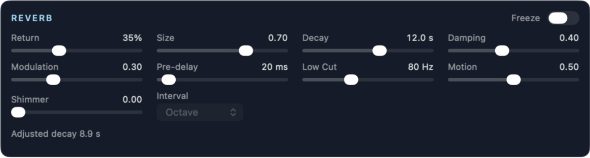
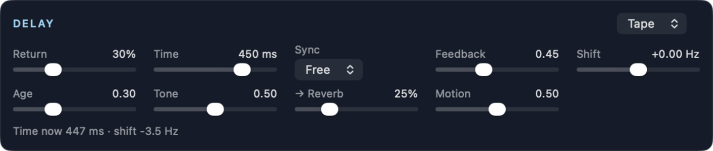

Effects
Each track sends to the two effects with its Rev and Dly controls. The Return control of each effect sets how much of the effect you hear in the output.
Reverb

A very large, diffuse reverb. It can make spaces that are larger than real rooms, and decays of more than a minute.
| Control | Function |
|---|---|
| Freeze | Holds the reverb tail with no loss, and stops new input. Use it to make a pad from the current sound. |
| Return | The reverb level in the output. |
| Size | The size of the space. |
| Decay | The decay time, from 0.5 to 100 seconds. |
| Damping | How fast the high frequencies decay. More damping gives a darker tail. |
| Modulation | Slow movement in the tail. It makes the tail less metallic, and it adds a small chorus. |
| Pre-delay | The time before the reverb starts, from 0 to 500 ms. |
| Low Cut | Removes low frequencies from the reverb, from 20 Hz to 1 kHz. This helps to prevent drones from becoming muddy. |
| Motion | How much the conductor can move the reverb. Sparse moods make the decay longer (up to twice as long). Chaos adds modulation. At 0, the conductor does not affect the reverb. |
| Shimmer | Sends part of the reverb tail through pitch shifters and back into the reverb. Each pass moves the sound up by the interval, so the tail climbs in pitch as it decays. More shimmer makes the tail climb faster, and decay sooner. At 0 (the default), the reverb has no shimmer. Freeze stops the shimmer. |
| Interval | The pitch change of each pass: Octave, Fifth, Oct + 5th (an octave and a fifth), or Up + Down (half of the shifters go an octave up and half an octave down, for a thicker sound with less climb). |
The "Adjusted decay" value shows the decay after the conductor changes it.
Delay

A delay with a frequency shifter in its feedback path. With a shift, each repeat moves up or down in frequency, so the repeats spiral.
| Control | Function |
|---|---|
| Mode | Tape: warm repeats with wow, flutter and saturation. BBD: a bucket-brigade delay, with darker repeats and clock noise. |
| Return | The delay level in the output. |
| Time | The delay time, from 5 ms to 2 seconds. Disabled when a tempo sync value is chosen. |
| Sync | Free, or a note value from 1/16 to 1/1 (with triplet "T" and dotted "D" values). The note value uses the tempo. |
| Feedback | How much of each repeat goes back into the delay. Above 1.0, the repeats become louder. Use this with care. |
| Shift | The frequency shift of each repeat, from −200 to +200 Hz. Small values (a few Hz) give slow phasing. Large values give metallic spirals. |
| Age | Tape: more wow and flutter. BBD: more clock noise and darker repeats. |
| Tone | The brightness of the repeats. |
| → Reverb | Sends the delay output into the reverb. |
| Motion | How much the conductor can move the delay. Chaos makes the shift wander (up to ±40 Hz), adds age, and makes the time drift (up to ±6%). At 0, the conductor does not change the delay. |
The text at the bottom shows the delay time and frequency shift values, after the conductor's changes.